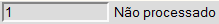

Pedido de Transferência [ Voltar ] Ao clicar no formulário, o sistema exibirá a seguinte tela:
Siga os passos abaixo para efetuar um pedido de transferência: 1º Passo: informe os dados principais do pedido. Os campos em amarelo são obrigatórios.
2° Passo: clique no botão
3º
Passo: especifique os produtos e respectivas quantidades para o pedido.
Clique no botão Os demais campos da grade exibirão, futuramente, dados processuais do pedido, como a quantidade aprovada, local abastecedor, número da requisição gerada, etc. 4º Passo: clique no botão5º Passo: se todos os dados estiverem corretos, clique no botão para realizar o pedido. Observe que, após a confirmação, o status do pedido passará de  para . Para visualizar o
relatório do Pedido de Transferência, clique no botão
Como cancelar de um pedido de transferênciaPara efetuar o cancelamento integral de um pedido de transferência já confirmado, clique no botão que se encontra na barra de botões (ver imagem abaixo). Em seguida, informe o motivo do cancelamento na janela de cancelamento que se abrirá e confirme com o botão "OK". Se desejar cancelar apenas um ou mais produtos do pedido, selecione a opção "Sim" no campo "Cancelar" referente à linha do(s) produto(s) do cancelamento e pressione o botão logo acima da grade (ver imagem abaixo). Em seguida, informe o motivo do cancelamento na janela de cancelamento que se abrirá e confirme com o botão "OK".
|
 [Novo] acima da grade para
criar uma nova linha.
[Novo] acima da grade para
criar uma nova linha. .
.